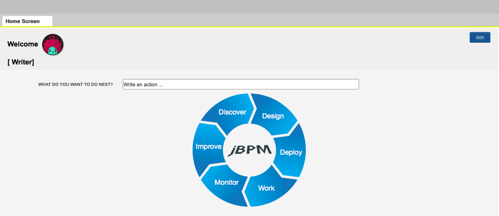
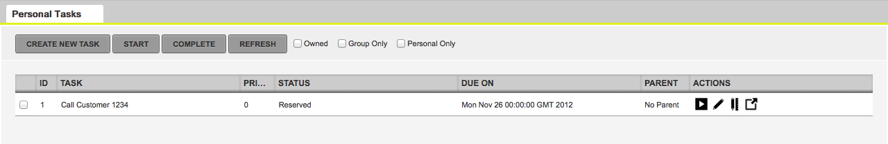
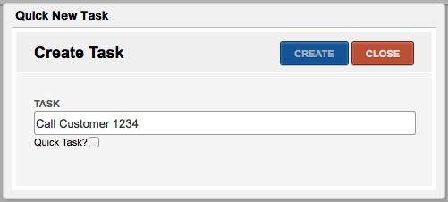
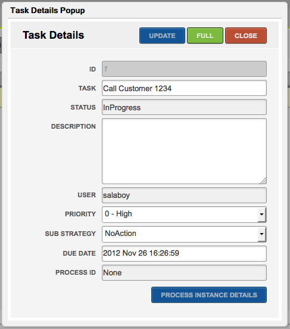
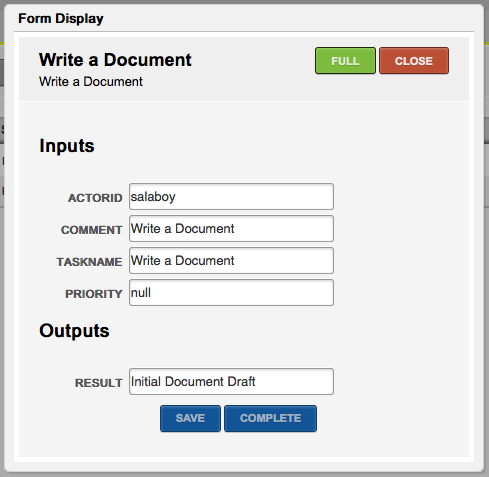
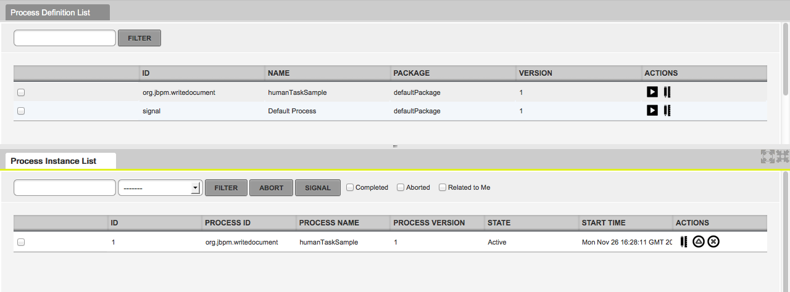
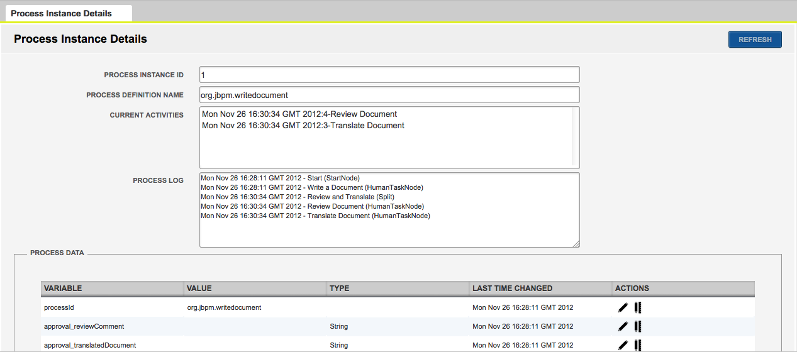
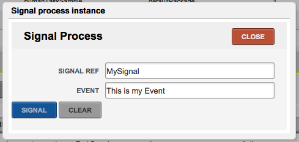

jBPM Console NG – Alpha Dev Access
Hi everyone! I’m writing this post to introduce the jBPM Console NG project which will provide a new integrated workbench for handling process related activities. We are now in a very initial stage of development and we are looking for contributors. We know that there are a lot of companies out there implementing their own solutions and at this point we encourage you all to give us feedback about the direction that we are picking for the BPM tooling. As usual, this tooling will be integrated with all the Drools and Guvnor Tooling to provide an integrated Knowledge Development Environment.
Introduction
As always, we are developing the jBPM Console NG in a public github repository: https://github.com/droolsjbpm/jbpm-console-ng
You can clone this repository, build the source code and deploy the jBPM Console NG in your own container following the next steps:
1) git clone https://github.com/droolsjbpm/jbpm-console-ng.git
2) cd jbpm-console-ng
3) mvn clean install
4) cd jbpm-console-ng-showcase
5) mvn gwt:run -> This will display the GWT Development Mode console which will give you an URL to access via your Browser (for development purposes you need to use Firefox which provides a Development GWT Plugin that allows us to Debug the application)
Technology
The application is being developed using Uberfire which is based on GWT (Google Web Toolkit), Errai and CDI. This mix of technologies gives us the ultimate environment to build flexible applications using a rock solid component model. I will be posting some examples showing how to get started to create new panels and add customizations to the existing code base shortly, but feel free to clone/fork the repository to take a look at the current status.
Goals
The main goal behind the application is to provide an integrated environment to discover, design, deploy, execute, monitor and improve our business processes. In order to provide all this functionality we have started the development integrating our existing components inside the Uberfire infrastructure.
There is an ongoing effort to integrate the jBPM Process Designer inside this platform, but I’ve started working on the Process Runtime Panels and in the Task Lists with the help of Maciej.
The following screenshots shows the current status of the application:
Home Screen
The home screen shows us important information about the things that the user is enabled to do. The jBPM Lifecycle chart allows the use to select in which phase he/she wants to work. Right now I’m focused on improving the “Work” stage as it’s being shown in the following screenshots.

- Home Screen
The home screen also contains a suggestion box that allows you to quickly type different “Commands” to access the different sections of the application. In order to return to the Home Screen, we can use the shortcut CTRL+H.
Tasks List
The Tasks List screen will allows us to interact with the tasks assigned to us or to the groups where we are included. As you can notice in the previous screen, my user (salaboy) was included inside the [Writer] group. This means that all the Tasks associated to the Writer group will appear in my personal task list. Notice that for each row inside the list we will have a set of actions to interact with each task. The following screenshot shows the Start button inside the Actions column, we can also edit/view the Task Details and we can also access to work on that particular task via it associated Task Form.

- Tasks List
Quick Tasks Creation
Clicking in the Create New Task button, we will be able to create a new Task for us or for other person inside the organization. The task will be created assigned to us, but we can forward the task later. Notice that we can also create a Quick Task, this means that the task will be automatically started and can be used as a simple TODO task. No matter where we are in the application we can use the shortcut CTRL+T to create a new task.

- Quick Task Creation
Task Details
The Task Details popup allows us to see the most important information about the a particular task. If we want to access to a more detailed view about that particular task we can click the Full button which will open more panels related with that task. Notice that This task is not associated with any business processes, but for those variables which are associated with a business process instance, we can access to see the process instance details using the “Process Instance Details” button on the bottom.

- Task Details
Forms
The current version allows us to interact with tasks via Task Forms which are dynamically generated based on the task content and the expected outputs. This task is already in progress, and for that reason you can see the Complete button on the bottom of the form. If the task is in a different state, different buttons will be displayed. As you can see the Save button will allow the user to store intermediate steps of the information that is being filled up inside the form. The Full button can be used to see the form with more contextual data, like for example Task Attachments or Task Comments.

- Task Form (Based on a Template)
Process Management
The Process Management panels will allows us to see all the available Process Definitions and it will allows us to create new Process Instances. As you can see in the following screenshot, you will be able to inspect the Process Definition Details to see the process diagram and relevant information about each process.

- Process Management
Process Instance Details
Inside the Process Instance Details you will be able to see the current status of the Process Variables, the activities that are being executed and also the Log for that particular instance.

- Process Instance Details
Signaling Events
From the Process Instance List you will be able to signal events. The Events List will be retrieved based on the process definition and the Signal Ref suggestion box list you all the events related with the selected Process Instance.

- Signal Events
Roadmap
During the following months we will be working on polishing the current panels and services behind the application to provide an error free environment that allows you to execute your business processes and interact with the Human Task Services. During this initial phase of development we are looking forward to improve the user experience, and for this reason we encourage you to try the latest source code and let us know what you think. This initial version can also be deployed in the cloud, like for example OpenShift. We believe that this will help a lot new users that want to try out an existing installation.
There a lot of things that needs to be done, so take a look at the following section because if you want to get involved with the development of an open source tooling this is a very good opportunity to learn and to join the project.
Contributions
The following list is a set of things that can be done by Java Developers and doesn’t require any advanced knowledge about the technology that we are using. You will see that the technology stack that we are using is extremely simple and agile:
- Task Comments Panels
- Task Attachments Panels
- Shortcuts Mappings Panels
- Notifications Panels
- Avatar and Meta information about users and groups Administration Panels
- Domain Specific Suggestions Phrases Administration Panels
- I18N Translations (We already have Spanish (es_AR) and English, so if you are a native speaker of a different language feel free to drop us a line)
- Extending the GWT DataGrid component to support prioritized lists (Knowledge about GWT is required)
- Create a Custom GWT Calendar Component to display the pending tasks in a Calendar. (Knowledge about GWT required)
- Experiment with m-gwt (http://www.m-gwt.com/) (Knowledge about GWT and motivation to learn m-gwt is required)
- Any idea that you may have and want to propose
Drop us a line with your ideas/requirements, we are very open to guide all the interested in doing contributions to learn what they need in order to get started. I will be posting some videos about how to create a simple panel and about how the internal services are working on the next few days, but feel free to ask questions if you are interested in this development. You already know where to find me :)

{kind=link}
{kind=link}
{kind=link}
{kind=link}
{kind=link}
{kind=link}
{kind=link}
{kind=link}
{kind=link}